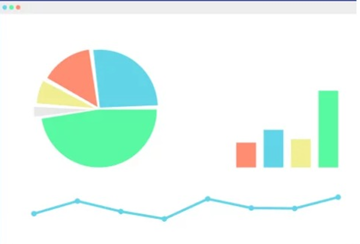

Plusieurs semaines voir plusieurs mois peuvent se passer avant
l'etablissement d'une situation intermediaire du fait de la precision requise
Notre offre permet d'obtenir rapidement des etats de gestion presentant
un niveau de precision acceptable dans le jour ou la contabiliter et a
jour
La performance d'une information de gestion se mesure plus par la rapidite
d'obtension que par son degres de precision
Outil de control et de suivi de l'entreprise
Avec le logiciel BILAN COMPARES ,surveillez regulierement la sante
financierement des entreprise que vous connaissiez
BILAN COMPARES permet a partir des donnes comptable (balances)
d'avoir une vision dinamique de l'entreprise en mettant en evidence les flux
financiers sur plusieurs annees (5ans) , et de controler les indicateurs de
de rentabilites , d'equilibre financier et de croissance . Avec BILANS COMPARES ,
dynamisez l'entretien annuel de presentation des comptes en elargissant le
champ de vision de l'analyse
Quelques cliques suffisent pour realiser un dossier d'analyse complet

Ces application sont destinees a fournir une aide complementairedans la gestion de votre
entreprise
Elles ne saurraient remplacer l'Expert Comptable .Elle n'ont pas pour but de se substituer
Aux situations intermediaires telle que peuvent les etablir les professionnels de la
comptabilite
L'etablissement de situation intermediaires suppose de passer un grand nombre
d'operation diverses de facons a ce que les comptes intermediaires presentent le meme
degres de precision que les comptens annuels:ecritures d'inventaires ,privisions charge a
payer ...